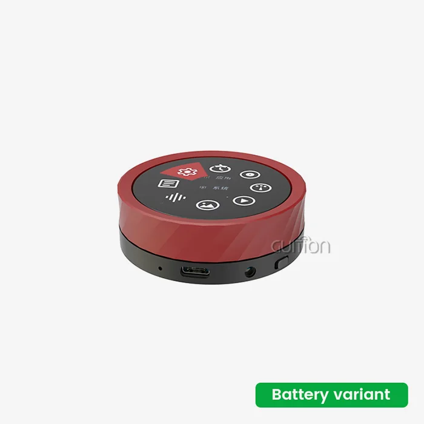

JC3636K518C_I_YR1
Guition · 1.8 inch knob display
JC3636K518C_I_YR1 is an 1.8" 360x360 IPS Capacitive touch ESP32 display board by Guition based on the ESP32-S3 with 16MB flash, 8MB PSRAM.
Features, ports & interfaces
- QSPI display
- Capacitive touch
- 8 MB PSRAM
- 16 MB flash
- microSD (TF) card slot
- Wi-Fi 4 (802.11 b/g/n, 2.4 GHz) – version from the ESP32-S3 datasheet
- Bluetooth 5 (LE) – version from the ESP32-S3 datasheet
- Speaker interface (amplifier on board)
- Microphone
- Lithium battery support
- Rotary knob (encoder)
- Enclosure / shell
Specifications
| Parameter | Value | Source |
|---|---|---|
| Screen size | 1.8" | source |
| Resolution | 360x360 | source |
| Panel | IPS | source |
| Display interface | QSPI | source |
| Display driver | ST77916 | source |
| Touch | Capacitive | source |
| MCU / SoC | ESP32-S3R8 | source |
| MCU family | ESP32-S3 | |
| CPU frequency | 240MHz | source |
| Flash | 16MB | source |
| PSRAM | 8MB | source |
| SRAM | 512KB | source |
| Wi-Fi | Yes | source |
| Bluetooth | Yes | source |
| Category | ESP32 Display Module | |
| Active area | 45.68×45.68 mm | source |
| Connectivity | Wi-Fi, Bluetooth BLE 5.0 | source |
| Dimensions | 66×66×22 mm | source |
| Expansion / IO | TF Card Interface, Microphone, Speaker Driver, Battery Support | source |
| Interface detail | QSPI | |
| Memory | 520KB SRAM, 8MB PSRAM, 448KB ROM, 16MB Flash | source |
| Power consumption | Approximately 1.3W | source |
| ROM | 384KB | source |
| Case / shell | Yes | source |
| Speaker interface | Yes | source |
| Vendor | Guition | |
| Viewing angle | >60° | source |
| Operating voltage | 5V | source |
Official links & documentation
Files
Offline copies are available on the interactive page.